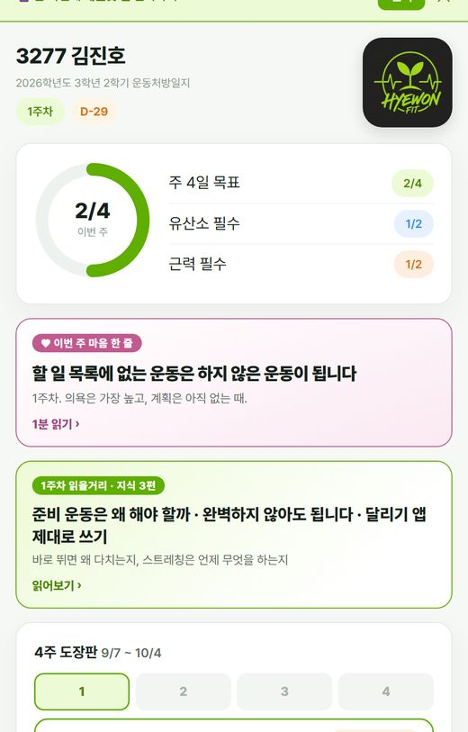
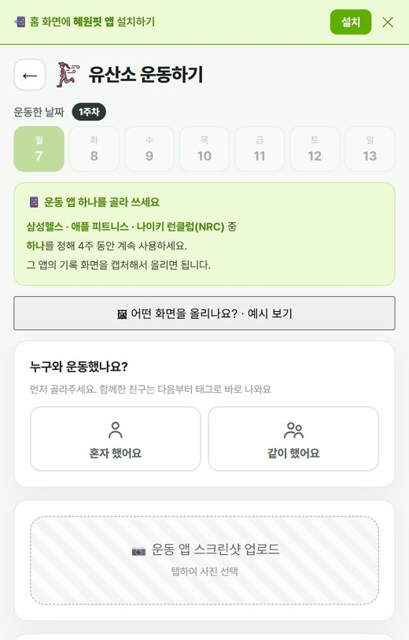
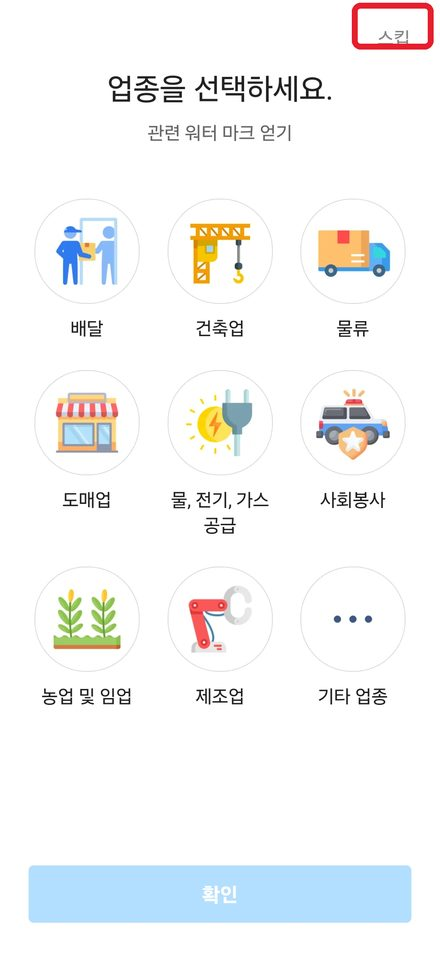
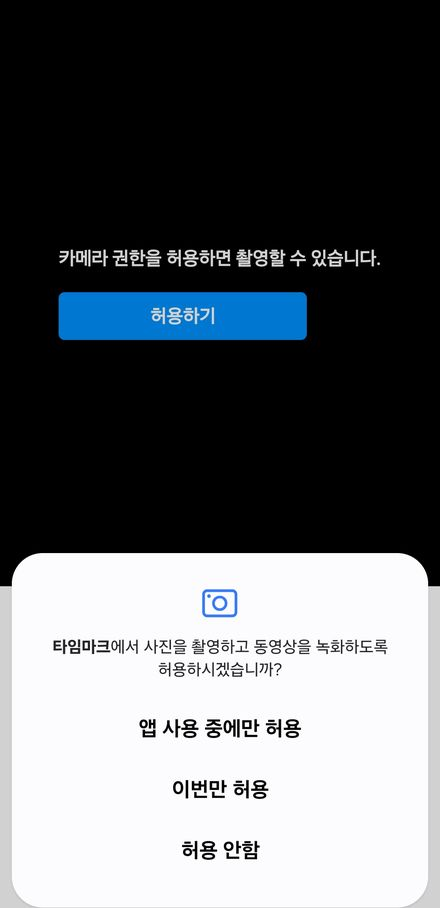
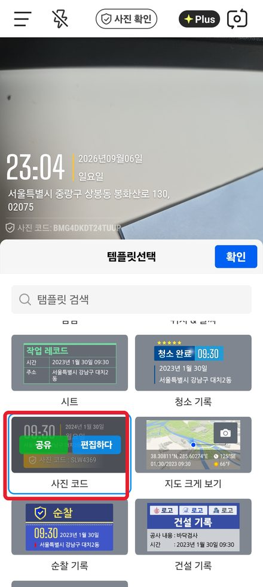
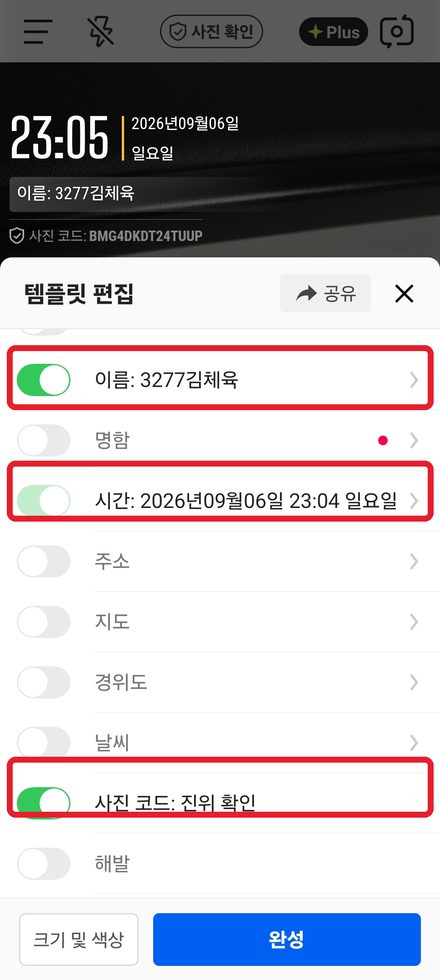
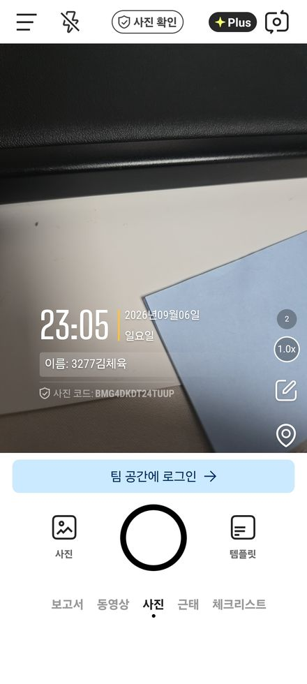
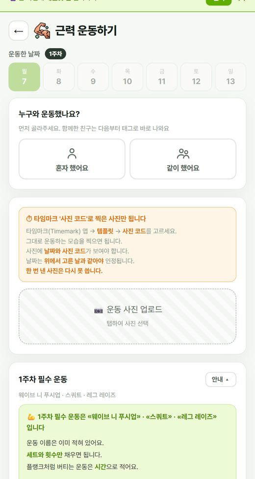
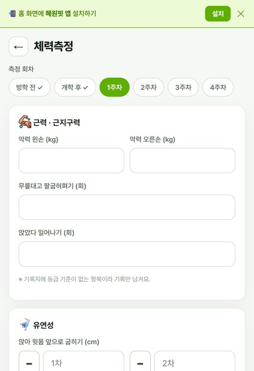

🔄 기록하기 전에 앱을 껐다 새로 여세요
켜 둔 채로 오래 쓰면 쓰던 내용이 사라질 수 있습니다.
운동을 올리기 전에 앱을 완전히 닫았다가 다시 여세요.
1한눈에
| 기간 | 9/7(월) ~ 10/4(일) · 4주 |
|---|
| 주 목표 | 주 4일 — 유산소 2일 + 근력 2일 |
|---|
| 마감 | 매주 일요일 밤 10시 |
|---|
| 배점 | 40점 · 운동 달성 + 제출 |
|---|
| 끝나고 | 10/4 뒤 감상문 |
|---|
- 같은 날 유산소 + 근력 = 가장 좋음 (각각 인정)
- 몰아서 하기 = 인정되지만 권장 안 함
- 추석에도 운동합니다.
- 늦게 올리면 «N일 초과»로 남습니다.
2앱 깔기
- 카카오톡·인스타 안에서 열면 설치가 안 됩니다. 브라우저로 여세요.
- 로그인 = 학번 + 학생코드 (다했어요와 같은 코드)
갤럭시
- 브라우저(삼성 인터넷·크롬)로 위 주소 열기
- 메뉴 → 앱 설치 또는 현재 페이지 추가 → 홈 화면
- «앱스 화면에 추가할까요?» → 추가
- «안전하지 않은 앱 차단됨»이 뜨면
세부정보 더보기 → 무시하고 설치하기
- 홈 화면에 초록 로고가 생기면 끝
아이폰
- 사파리로 위 주소 열기 (크롬 말고 사파리)
- 아래 공유(￪) → 홈 화면에 추가 → 추가
3홈 화면

홈 화면
- 동그라미 = 이번 주 운동한 날 / 4일
- 그 옆 = 유산소 n/2 · 근력 n/2
- 분홍 카드 = 이번 주 마음 한 줄 (1분)
- 초록 카드 = 이번 주 읽을거리
- 아래 4주 도장판 — 달성한 주는 ✓
- 회색 점 = 선생님 확인 중
4유산소
삼성헬스 · 애플 피트니스 · 나이키 런클럽 중 하나를 정해 4주 내내 사용

유산소 운동하기
- 날짜 고르기 → 사진 올리기 → 거리·시간 직접 적기 → 성찰 한 줄
- 사진에 거리 · 시간 · 날짜 세 가지가 보여야 합니다.
- 앱에서 «예시 보기»를 누르면 어떤 화면인지 나옵니다.
- 달리기 아니어도 됩니다. 빠르게 걷기 · 자전거도 유산소.
- GPS를 켜세요. 꺼져 있으면 거리가 0km.
- 실내는 GPS가 안 잡힙니다. 러닝머신 화면을 찍으세요.
- ✗ 지도만 나온 화면 · 한 주 합계 · 걸음 수만
5타임마크 설정
근력 사진 전용 · 무료 · 처음 한 번만 설정
사진에 꼭 보여야 합니다
① 이름② 시간③ 사진 코드
- 위 QR을 찍거나, 스토어에서 타임마크를 검색해 설치
- 업종 고르는 화면 → 오른쪽 위 스킵
- 권한은 카메라만 허용하면 됩니다 (위치·알림은 «허용 안 함»으로도 됨)
- 아래 템플릿 → «사진 코드» 고르기
- 편집하다 → 이름 켜고 «학번 + 이름» 적기 (예: 3277김체육)
- 시간과 사진 코드도 켜져 있어야 합니다
- 주소 · 지도 · 날씨 · 해발은 꺼도 됩니다
- 완성을 누르면 설정 끝. 다음부터는 그대로 찍기만 하면 됩니다

① 업종은 스킵

② 카메라 허용

③ 템플릿 → 사진 코드

④ 이름 켜고 학번·이름

⑤ 이렇게 나오면 끝
6근력
사진은 반드시 타임마크 앱으로 (설정은 앞 장 참고)
사진에 꼭 보여야 합니다
① 이름② 시간③ 사진 코드

근력 운동하기
- 주마다 필수 운동 3가지 — 이름은 이미 적혀 있습니다.
- 세트와 횟수만 채우면 됩니다.
- 플랭크처럼 버티는 운동은 시간으로.
- 이름 옆 «방법» = 그림 · 순서 · 주의 · 영상
- 더 한 운동은 아래 선택 운동에.
| 주 | 상체 | 하체 | 코어 |
|---|
| 1주 | 웨이브 니 푸시업 | 스쿼트 | 레그 레이즈 |
| 2주 | 암 워킹 | 리버스 런지 | 플랭크 |
| 3주 | 스탠다드 푸시업 | 와이드 스쿼트 | 사이드 플랭크 |
| 4주 | 베어 크롤 | 크로스 백 런지 | 힐 터치 |
- 모두 맨몸 운동. 기구 필요 없음.
- 매주 마무리 — 앉아 앞으로 굽히기 · 엎드려 뒤로 젖히기
이런 사진은 인정 안 됩니다
- 일반 카메라로 찍은 사진
- 이름 · 시간 · 사진 코드 중 하나라도 없거나 잘린 사진
- 다른 날짜 · 전에 낸 사진 · 친구 사진
한 번 설정해 두면 다음부터는 그대로 찍기만 하면 됩니다.
7체력측정

체력측정
- 회차 6개 — 방학 전 · 개학 후 · 1~4주차
- 악력 · 팔굽혀펴기 · 앉았다일어나기 · 유연성 · 인바디
- BMI는 앱이 계산합니다.
- 발끝에 못 미치면 − 버튼으로 마이너스.
- WHR은 둘레로 계산하거나 값을 직접 입력.
- 같은 회차를 다시 넣으면 덮어씁니다.
- 변화 그래프로 4주 변화를 봅니다.
8성찰 · 감상문
- 성찰은 주마다 한 편, 모두 4편.
- 성찰 칸 위에 그 주 질문이 떠 있습니다. 그 질문에 답하듯 쓰면 쉽습니다.
- 선생님이 답을 달면 말풍선으로 보입니다.
- 운동을 올릴 때마다 오늘의 성찰 한두 줄 — 비우면 저장 안 됩니다.
- 감상문은 10/4 이후. 체력 그래프를 보며 4주를 돌아보고 씁니다.
9자주 묻는 질문
- Q. 사진을 깜빡했어요.
- 사진 없이 내면 기록은 남지만 운동한 것으로 인정되지 않습니다.
- Q. 지난 주 것을 안 올렸어요.
- 올릴 수 있습니다. 날짜 위 주차 칩에서 지난 주를 고르세요. 대신 «N일 초과»로 남습니다.
- Q. 같은 날 유산소랑 근력을 다 했어요.
- 운동한 날은 하루지만 유산소 1일 · 근력 1일이 각각 올라갑니다. 가장 좋은 방법입니다.
- Q. 아파서 못 했어요.
- 김진호 선생님께 미리 말하세요. 공지 → 문의하기로도 됩니다.
- Q. 폰을 바꾸면 기록이 사라지나요?
- 아니요. 다시 로그인하면 그대로 있습니다.
- Q. 앱이 옛날 화면이에요.
- 앱을 껐다 켜세요. 화면 맨 아래 버전이 바뀌면 최신입니다.
- Q. 학생코드를 잊었어요.
- 다했어요에서 쓰던 코드와 같습니다. 모르겠으면 선생님께.